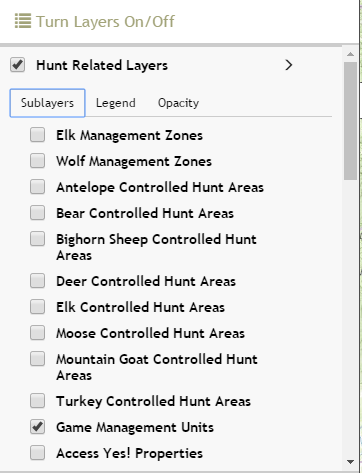

Turn Layers On/Off
 TURN LAYERS ON/OFF
TURN LAYERS ON/OFF

- Toggle a layer or group of layers on/off in the Turn Layers On/Off window by checking/unchecking the checkbox in front of its layer or group name.
- See the visible layer symbology by clicking the Legend tab.
- Increase/decrease layer transparency using the slider found under the Opacity tab. (NOTE: This is especially useful for the Land Management Layer; it is currently set at 50% transparency so you can see other layers and the basemap under it.)
The hunting restrictions, campgrounds and wildlife layers have Popup Information Boxes enable. When these layers are turned on, click on a feature to get more information about it.
Layer Descriptions:
- Hunt Related Layers: created by IDFG GIS analysts and includes current year controlled hunt areas by species, elk and wolf management zones, areas with hunting restrictions or closures as listed in corresponding hunting regulation booklets, game management units, Access Yes! properties, and south central Idaho wildlife tracts.
For more information about the Access Yes! program: http://fishandgame.idaho.gov/ifwis/huntplanner/accessyesguide.aspx
For more information about wildlife tracts: http://fishandgame.idaho.gov/public/wildlife/?getPage=298
- Administrative Boundaries: created by IDFG, BLM, and USFS. Useful layers for navigation and context.
For more information about Wildlife Management Areas: http://fishandgame.idaho.gov/public/wildlife/wma/
WMA desktop interactive map application: http://fishandgame.idaho.gov/ifwis/maps/wma/
There is a difference between National Forest Administrative & Legislative Boundaries:
- Administrative: The lands administered by a USFS administrative unit. The area encompasses private lands, other governmental agency lands, and may contain NF lands within the proclaimed boundaries of another administrative unit. All NF lands fall within one and only one administrative forest area. http://data.fs.usda.gov/geodata/edw/edw_resources/meta/S_USA.AdministrativeForest.xml
- Legislative: The lands within the original, congressionally proclaimed USFS boundaries, along with subsequent Executive Orders, Proclamations, Public Laws, Public Land Orders, Secretary of Agriculture Orders, and Secretary of Interior Orders creating modifications thereto, along with lands added to the NFS which have taken on the status of 'reserved from the public domain' under the General Exchange Act. http://data.fs.usda.gov/geodata/edw/edw_resources/meta/S_USA.ProclaimedForest.xml
- Land Management Layer: created by BLM. This layer displays the managing agency, not owner, of the surface of the land. This Surface Management Agency GIS dataset is not a legal document and should be used as a general guide only. Metadata
- Motorized & Non-motorized Trails: created by Idaho Dept. of Parks and Recreation using USFS Motor Vehicle Use Map and BLM Road data. NOTE: If these layers is grayed-out, it has a scale-dependency set on it and you need to zoom in until it becomes active. If you would like to see more information about a specific road/trail, use the Idaho Trails Map (http://www.trails.idaho.gov/trails/).
- Campgrounds: created by Idaho Dept. of Parks and Recreation. Idaho campgrounds and RV parks as of 12/9/13. Click on a campground to get a popup box with information such as phone number, fees, # of Sites, who administers the site, etc. Metadata
- Wildfire & Closure Related Layers:
- Fire Emergency Closure Areas: created by IDFG. Support from USFS Boise National Forest.
- Fire Perimeters and MODIS fire detections: created by GeoMAC (Geospatial Multi-Agency Coordination) Wildland Fire Support. http://www.geomac.gov/ and USFS-RSAC (Remote Sensing Application Center. https://fsapps.nwcg.gov/afm/
Created with the Personal Edition of HelpNDoc: Create help files for the Qt Help Framework